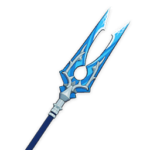

Сян Лин

Отличный универсальный герой. Сян Лин быстро атакует с помощью копья, а с помощью призыва панды непрерывно наносит огненный урон любым целям вокруг.
Билд "Урон в секунду Пиро"
Оружие
Улов
Увеличивает урон взрыва стихий на 16/20/24/28/32% и шанс критического удара взрыва стихий на 6/7,5/9/10,5/12%.
или
Амэнома Кагэути

После применения элементального навыка владелец оружия получает 1 семя Наследия. Эффект может срабатывать 1 раз в 5 секунд. Семя Наследия действует 30 секунд. Одновременно может быть до 3 семян Наследия. После использования элементального взрыва все семена Наследия расходуются, а через 2 секунды персонаж восстанавливает 6 энергии за каждое израсходованное семя.
Артефакты
Заблудший в метели

(2) +15% к урону Крио.
(4) Когда персонаж атакует врага, находящегося под воздействием Крио, шанс критического удара увеличивается на 20%. Если враг заморожен, шанс критического удара увеличивается еще на 20%.
или

(2) +20% к перезарядке энергии
(4) Увеличивает урон взрыва стихий на 25% от перезарядки энергии. Таким образом можно получить максимум 75% дополнительного урона.
Рекомендуемые характеристики артефактов
Основные

Атака%

Урон Крио

Критический урон / Атака%
Второстепенные
- 1.Критический урон
- 2.Атака%
- 3.Восстановление энергии%
- 4.Шанс критического попадания
- 5.Атака